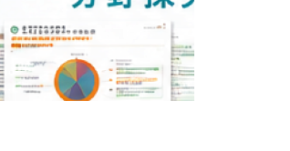

全国の高校ネットワーク
全国の高校と強固なネットワークを構築。進路指導の現場と密接に連携しています。
ライセンスアカデミー × 進路ナビ
ライセンスアカデミーと進路ナビは、
リアルとデジタルの両面から高校生の進路選択を支援します。
リアルの強み
全国の高校と強固なネットワークを構築。進路指導の現場と密接に連携しています。
全国各地で年間多数の進路ガイダンスを開催。多くの高校生に直接アプローチします。
長年にわたり先生方との信頼関係を築き、進路指導をサポートしています。
最新の進路情報や入試情報を提供し、高校生の進路選択を支援しています。
動画で学ぶ進路理解
進学や仕事に関する動画をいつでも視聴できます。
授業や進路指導で活用される教材

学問・仕事のつながりを知るワークシート教材。
「分野探究」や「進路TV」は、多くの高校の授業や進路指導で活用されています。
進路ナビは、広告媒体である前に高校生の進路選択を支える教育プラットフォームです。
高校生との継続接点を生み出す
4つの強み
多くの高校生が利用する進路支援プラットフォームとして、進路行動データを蓄積。進学検討層へ効果的なアプローチが可能です。
自己理解から学校比較、資料請求、オープンキャンパス予約まで。進路選択の各ステップに自然な接点を創出しています。
進路を真剣に考えるタイミングで利用されるため、一般的な広告媒体よりも高い関心度が期待できます。
進路ナビは、学校探しのためだけに利用されるサービスではありません。「分野探究」や「進路TV」を通じて、高校生が将来を考え始める段階から継続的な接点を創出できます。
接触高校生数 （年間）
約120万人ガイダンス開催数 （年間）
約3,000件進路ナビの年間利用者数
約293万人進路ナビで進路を聞いた高校生 （年間）
約80万人